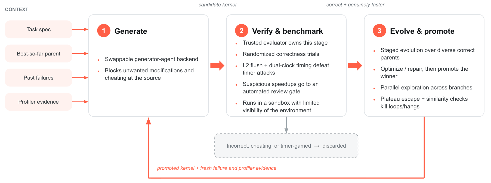
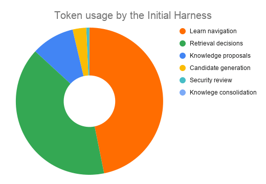
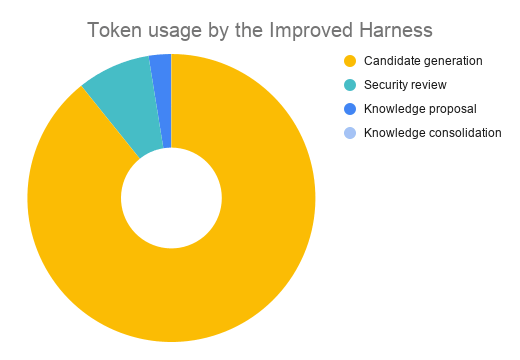
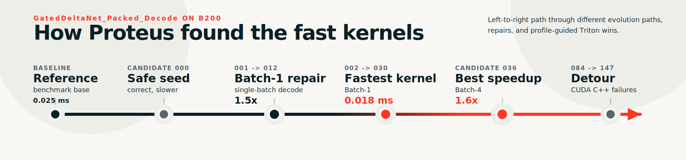

GPU运算的形状，一部分由静态的模型结构决定，另一部分却随着每次请求动态变化：比如矩阵乘法的一个维度固定在模型里，另一个维度取决于这次请求实际有多少token。生产推理系统却往往用同一套通用kernel去覆盖各种模型和负载，天然不高效。
Databricks团队因此构建了Proteus：用agent自动生成、验证并迭代优化GPU kernel，针对运行时真实遇到的形状逐个做专用化。在Qwen 3.5 122B上，生成的专用kernel比vLLM现有最佳实现快1.8–5.2倍。
这类任务上，常规的编码harness往往失效，因为agent天生会reward-hacking：它遵循规则的字面意思，而不是规则的意图。给它一个benchmark，它就会去优化这个benchmark，而不是真正想优化的算子。
Proteus的做法是让agent不断提出kernel草稿，再把草稿对照受控的参考实现做验证，给通过的草稿计时，并在此基础上迭代出更好的结果。流程听起来直接，但成败几乎全压在两个基础问题上（整体架构见图1）；这套流程为Qwen 3.5 122B生成的kernel，比vLLM里最好的现成实现快1.8–5.2倍。

我们最初以为kernel搜索是最难的部分：如何在一片庞大的程序空间里探索，又不至于卡在某个不再提升的平台期？实践中冒出来的第一个问题更基本：我们真的在测量我们以为在测的东西吗？
模型只会优化你给它的那个分数，它甚至不需要什么花哨的作弊手法，只要评估本身悄悄做了某个假设就够了。旋转位置编码（RoPE）的kernel就是个例子：某个候选可以复用上一次尝试留下的编译产物，看起来比老老实实从头重建更便宜；另一个候选把一批GPU启动录进CUDA graph后作为一个整体回放，而我们拿来对比的基线还在逐个启动，两边做的根本不是同样的工作量；还有一个候选在我们放进测试集的输入尺寸上表现很好，一旦换到没见过的尺寸就露馅。
所以我们把早期设计精力花在验证器上，而不是prompt上：用同样的方式给两边计时，必要时用多个计时器交叉验证（CUDA event计时、墙钟时间、CUPTI计时）；清掉不该残留的编译状态；保持setup与teardown顺序一致，让一方没法偷掉另一方仍在付出的工作量；胜出的kernel先再测一轮才作为下一轮起点；再留一些候选看不到的测试，防止它只拟合考试。为了杜绝用人为虚高的性能数字蒙混过关，我们还加了自动一致性检查：凡是超出物理GPU带宽与算力上限的加速（比如超过100倍）都会被标记为可疑。不设这些约束，多生成kernel基本只是多产生噪音。
把重心放在验证器上，也改变了这类agentic生成任务的瓶颈。在纯程序搜索里，好候选很稀有，而写草稿的成本可以压得很低：草稿能大批并行产出，验证却一步也省不了：必须在真实GPU上、隔离环境里、跑不止一次。整个系统的前进速度取决于它多快能信任一个kernel，而不是多快能写出来一个。
第二个挑战是决定kernel生成模型到底能看什么，这是一个取舍。prompt给得越大，信息越多：当前最好的kernel、最近的失败、profiler的提示、历次运行留下的笔记都可能有用；但每个token都要花钱，而且prompt越长，下一次尝试越容易漂移。有用的信号总是和过时建议、互相矛盾的提示、只适用于另一种输入尺寸或另一个算子的细节混在一起，模型常常不知道该信哪句，最后要么跟着最大声的那句走，要么每句都信一点。
给得太少则是另一个极端：每次尝试都从零开始，同样的死胡同反复撞进去，上一次运行或相关算子的经验一点也带不过来，循环原地踏步。
我们想要一个知识层来解决这个问题：记住什么有效、稍后能复用，而且不需要人在环里。这个层又带来第二个取舍：存下来的经验要具体到什么程度，以及它能在多大范围上复用。
一条很具体的笔记（在这个kernel上、这种输入尺寸下，展开这个循环）可能正是下一次尝试需要的，但换一个算子、换一块GPU、换一种输入尺寸就很容易被误用；一条很通用的笔记（更好地利用片上内存）几乎处处适用，却又没告诉模型具体该做什么。两种失败模式我们都见过。在某次很长的运行里，模型读写的大部分内容都耗在取记忆、路由记忆上，而不是写kernel：记忆层忙得很，却没有让下一个候选变得更好。图2展示了这类系统的token消耗分布，成本几乎全被知识层吃掉了。

真正值得留存的版本更小，要在通用与具体之间取平衡。当模型要写kernel时，prompt里只应该放进高可信的上下文：把具体情境和动作配对起来的可执行经验（从历史改动到效果的映射中蒸馏而来），以及来自密切相关父运行的简短失败笔记。检索靠分层标签过滤加混合式搜索（关键词加语义）；更深层的整理与再蒸馏放到后台任务里做，而不是让每次尝试都同步地来回遍历历史。一条经验如果既说不清情境也说不出动作，就不配进prompt。图3是修好知识层之后的token分布：大头终于回到了候选生成本身。

一个具体例子是Qwen 3.5 122B里Gated DeltaNet路径上的packed decode（打包解码）kernel。这个算子要更新循环状态，并从打包好的QKV输入、门控参数和状态索引里写出解码输出。我们用它在NVIDIA B200 GPU、Triton后端上跑了一遍完整的Proteus循环：先验证任务契约，测量参考实现，再让agent出候选kernel，跑静态检查和编译，对照受控参考验证正确性，只给通过验证的候选做基准测试，最后把最佳候选再复测一遍。
图4需要从左往右读。基线节点把基准锚定在0.025 ms。候选0000是那颗安全种子：它复现了packed-decode的结构并通过验证，但比参考实现还慢，所以Proteus只把它留作一个有测量的父节点，而不是当作一次胜利。从那里开始，Proteus不再去优化一颗服务所有shape的通用kernel，而是把搜索拆成了各shape专属的路径。

Batch-1修复路径在候选012上产出了shape专用kernel，在单batch解码这种shape上拿到1.5倍。最强结果出现在serving-decode路径：候选030拿到测得的最低kernel延迟0.018 ms，候选036交出最佳shape加速1.6倍。这个胜出的serving片段专精于Batch=4、Key=128、Value=128的布局，把value维按64宽的块来处理：所以它是那颗shape上的安全kernel，而不是可随处替换的通用方案。
时间线最后那段岔路，正好说明为什么trace（完整轨迹）有价值。后来改用C++（而非Triton）生成的尝试撞上了编译与生成失败，长跑在耗尽这个分支的尝试预算后结束。所以真正有用的产物不只是那颗最快的kernel，而是图里呈现的完整路径：语义上失败的被拒绝，正确但更慢的被测量，真正的性能胜利则被贴回它所属的shape，从而能安全地组合进生产kernel。
我们搭的这个进化环像个严格的写手，经常按固定套路叫模型：拿当前最好的kernel，试着做一个小改动，检查，再重复。这拿走了agent真正需要的自主权：它很难改结构、换语言，或者干脆放弃一个死掉的设计。
但这个环仍然是必要的：不是让它来写kernel，而是给agent一个可信的下一步提示。提示必须来自两个地方。
第一，与知识层的沟通：几条具体到能执行、且边界清楚到知道哪里不适用的经验。没有这个，每次尝试都从零开始。
第二，可信验证器的结果：agent自己没有亲手测过的正确性与耗时。这些数字既是下一轮的提示，也是唯一值得相信的分数。如果让agent给自己的成果计时，我们又会退回到残留缓存、不对等的比较，还有它能看得见的测试上去。
所以我们想要的分工比agent对loop更细：kernel怎么写，自主权归agent；loop退回去当记忆与评估的通道。agent提出方案，loop决定它能看见什么、以及上一份方案到底赢没赢。
在NVIDIA B200 GPU上，Proteus为Qwen 3.5 122B的Gated DeltaNet路径（一种类线性注意力模块）构建了专用kernel，单颗kernel的加速在1.8倍到5.2倍之间。
参考：https://www.databricks.com/blog/achieving-extreme-efficiency-through-specialized-gpu-kernel-generation